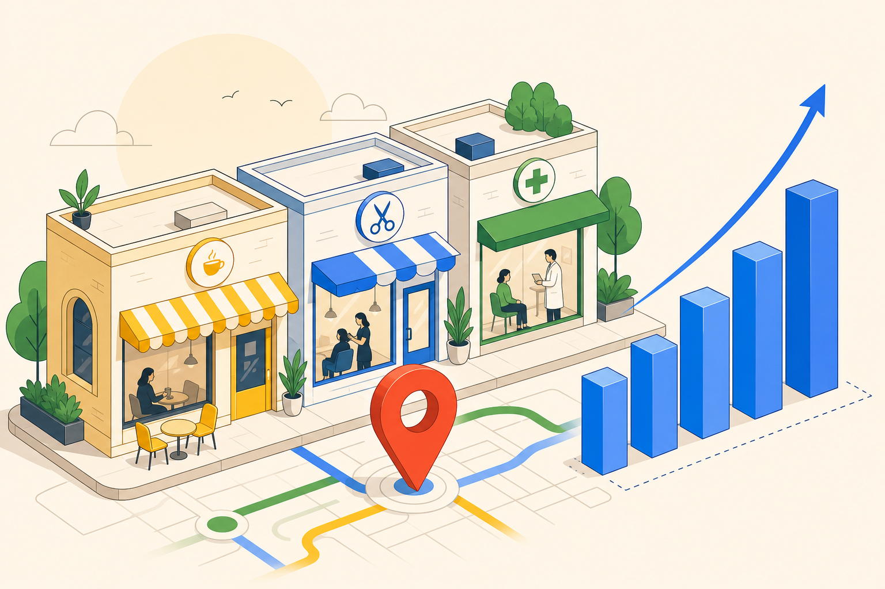

整骨院
沖縄本島南部
MEO運用3ヶ月継続で表示×2.9倍・電話×2.3倍
月間表示
4,200 → 12,100
×2.9
電話タップ
17 → 39
×2.3
ルート
88 → 216
×2.5
施策: GBP完全整備・写真50枚追加・週2投稿・口コミ返信24h以内。順位ではなく来店KPIで運用。
SearchManiaが伴走している店舗・団体・企業の一部をご紹介します。業種は外壁塗装・シーシャカフェ・接骨院・NPOなど多岐にわたります。数値開示は各クライアント様の承認が取れ次第、順次追加します。

SearchMania が実際に伴走した店舗の Googleビジネスプロフィール インサイト 実データです。プライバシー配慮のため店名は非公表、業種・エリア・数値のみ公開しています。
数値は各店舗の実測値で、SearchMania支援開始から3〜6ヶ月継続後の変化です。業界や競合環境によって結果は変動します。「表示」= Google検索とマップの合算表示回数、「電話」= 電話タップ、「ルート」= ルート検索タップ。
店舗名・URL の公開について許諾をいただいたプロジェクトの一覧です。実サイトから施策の実装を確認いただけます。

キャラクターロゴ＋ビビッドグラデーションで差別化。CMS＋Google口コミ同期＋Make自動化＋Search Console まで一気通貫で稼働中の完成事例。

3D体験ヒーロー＋CMS＋GBP同期＋Make自動投稿の完全構築事例。恩納村エリアで「シーシャ×恩納村」の想起を狙う。

SEO/AIO対策の先行実装事例。content-language + ekiten sameAs + 動的sitemap + JSON-LD FAQPage を完全実装し、AI検索での想起を強化。

ギネス世界記録挑戦を旗印にしたNPOの公式サイト構築。カウントダウン付きヒーロー・CMS・SEO/AIO対応でメディア露出を強化。
GBPインサイト・Search Console・GA4 を初回無料で全て確認。想定と実態のズレを最初に共有します。
表示回数・電話・ルート検索・来店の4層で指標を設定。順位だけの成果報告はしません。
投稿・返信・写真整備を自動化しつつ、品質はスタッフが最終確認。炎上リスクを抑えます。
GBPだけでなく公式サイトのJSON-LD・llms.txt・動的sitemapまで実装。AI検索時代の露出も同時に取ります。